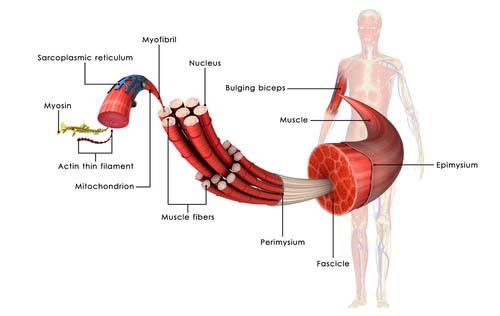

La récupération : une étape clé
Après une séance intense de musculation, la récupération est essentielle pour progresser. Voici quelques conseils :
- Sommeil : Dormir suffisamment aide à la récupération musculaire. C'est pendant le sommeil que le corps répare les micro-déchirures musculaires et libère des hormones de croissance.
- Étirements : Les étirements après l'entraînement aident à prévenir les blessures, à améliorer la flexibilité et à réduire les courbatures en favorisant la circulation sanguine dans les muscles sollicités.
- Hydratation : Une bonne hydratation permet de remplacer les fluides perdus lors de l'entraînement, améliore la circulation sanguine, et aide à éliminer les toxines accumulées pendant l'effort.
- Nutrition : Un apport en protéines et en glucides après l'entraînement favorise la réparation musculaire et reconstitue les réserves d'énergie. Prendre un repas équilibré après l'exercice aide à accélérer la récupération.
- Repos actif : Intégrer des journées de repos actif, comme de la marche légère ou du yoga, permet de relâcher les tensions musculaires sans stresser davantage le corps.
